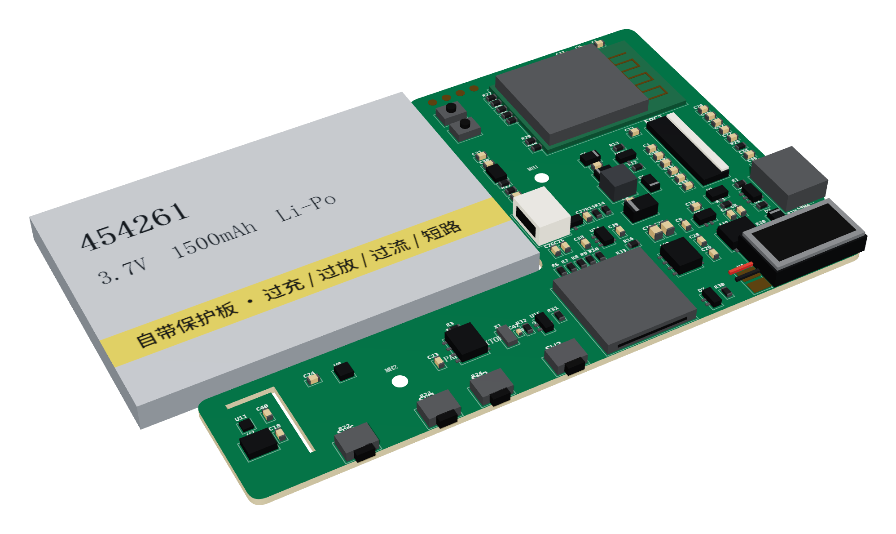
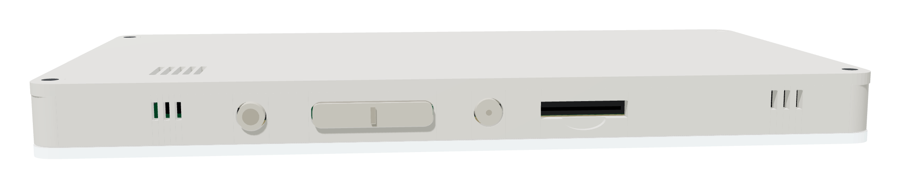

展品 01
不到一厘米里的层次
电池不叠在电路板上，而是放进 L 形电路板的缺角里，和元件并排。整机因此从最初的 17 mm 压到 9.9 mm。
- 后盖1.6
- 锂电池 4542614.5
- 四层电路板1.2
- 墨水屏0.85
- 中框与三个键帽侧壁 2.0
- 亚克力面板1.5

展品 02
电路板
所有元件都在背面一侧，高度不超过 4 mm。天线伸向短边，四层都为它留出净空；电源、屏幕驱动、音频各占一块，互不打扰。

展品 03
细节



展品 04
系统
设备只负责显示和发声，排版与语音合成交给电脑，两者经 Wi-Fi 相连。
展品 05
三周，八十二个版本
- 电池贴屏电路板改成 L 形，电池放进缺角，厚度从 17 mm 压到 8.8 mm。
- 为手而排按桌面与手持两种姿势重排布局，按键、天线、喇叭各就其位。
- 四层板加一层完整地平面，屏幕升压和功放的干扰都小了。
- 原理图落地六张原理图对齐 EDA；拨动开关换成长按电源键。
- 逐项复核按钻孔图和坐标文件核对每颗器件、每个孔位。
- 打样 · 外壳PCB 打样完成，亚克力面板外壳定稿。